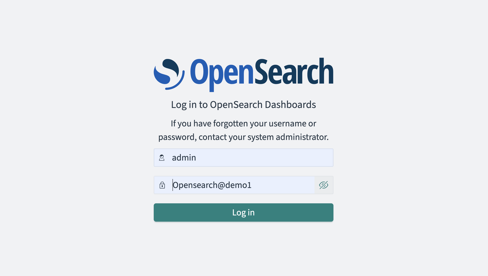
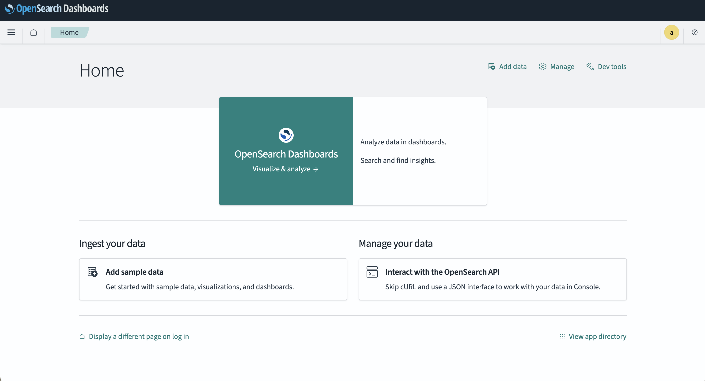
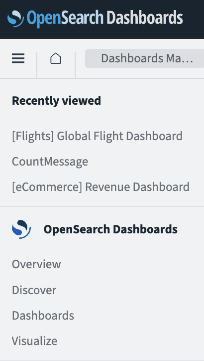
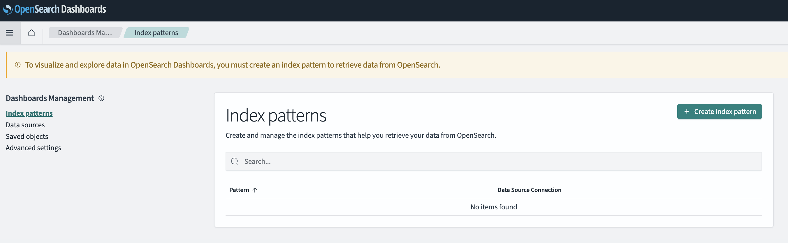
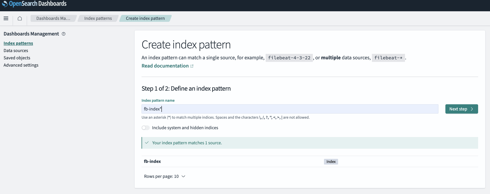
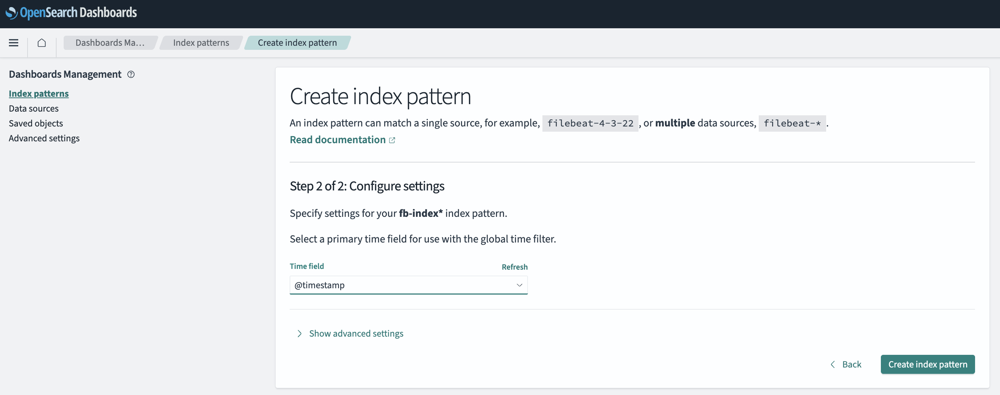
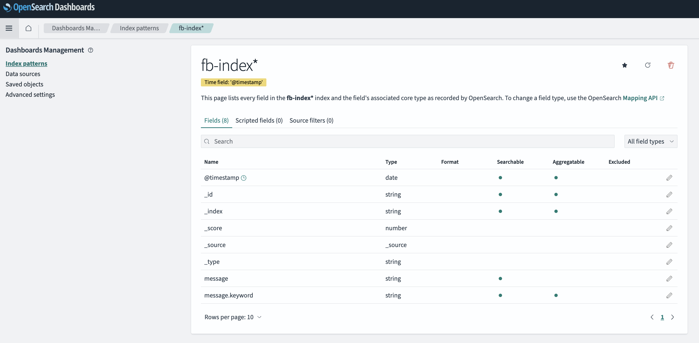
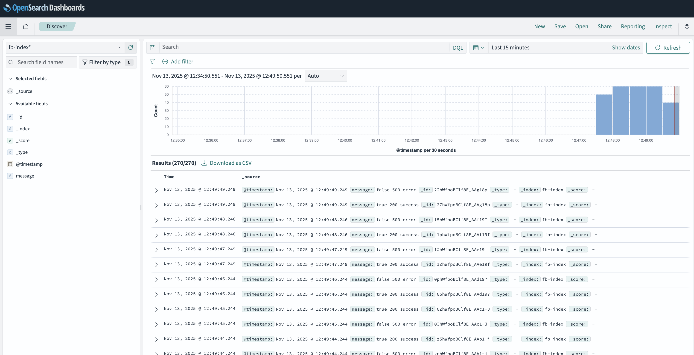

Lab 9 - Visualizing Fluent Bit telemetry data with OpenSearch
Lab Goal
This lab explores how to visualize Fluent Bit telemetry pipeline data with OpenSearch and the OpenSearch Dashboard.
Intermezzo - Jumping to the solution
If you happen to be exploring Fluent Bit as an architect and want to jump to the solution in
action, we've created an
OpenSearch Easy Install project.
Instead of working through this workshop, you'll find a readme file detailing how to spin up the solution and pointing to an article detailing everything you need to know to get started.
Instead of working through this workshop, you'll find a readme file detailing how to spin up the solution and pointing to an article detailing everything you need to know to get started.
Data visualization - Why OpenSearch integration?
Why integrate Fluent Bit with OpenSearch? When collecting telemetry data at scale, you need a
powerful backend to store, search, and analyze your logs. OpenSearch is an open source,
distributed search and analytics engine that provides exactly these capabilities.
OpenSearch Dashboard provides a visual interface for exploring and visualizing the data stored in OpenSearch. Combined with Fluent Bit as your telemetry pipeline, you get a complete observability solution for your infrastructure.
For developers, this lab will demonstrate setting up OpenSearch and OpenSearch Dashboard using either Podman containers or Kubernetes (k3s) with Helm, configuring Fluent Bit to send telemetry data to OpenSearch, and exploring the ingested data through the Dashboard's Discover feature. See the next slide for an architectural overview of what we'll be building.
OpenSearch Dashboard provides a visual interface for exploring and visualizing the data stored in OpenSearch. Combined with Fluent Bit as your telemetry pipeline, you get a complete observability solution for your infrastructure.
For developers, this lab will demonstrate setting up OpenSearch and OpenSearch Dashboard using either Podman containers or Kubernetes (k3s) with Helm, configuring Fluent Bit to send telemetry data to OpenSearch, and exploring the ingested data through the Dashboard's Discover feature. See the next slide for an architectural overview of what we'll be building.
Data visualization - The solution architecture
┌─────────────────┐ ┌─────────────────┐ ┌─────────────────────┐
│ │ │ │ │ │
│ Fluent Bit │─────▶│ OpenSearch │◀─────│ OpenSearch │
│ (telemetry │ │ (backend) │ │ Dashboard (UI) │
│ pipeline) │ │ │ │ │
│ │ │ Port: 9200 │ │ Port: 5601 │
└─────────────────┘ └─────────────────┘ └─────────────────────┘
│ │ │
│ │ │
▼ ▼ ▼
Collects & sends Stores, indexes, Visualizes data
telemetry data & searches data in browser
The architecture consists of three main components:
- Fluent Bit - Collects and forwards telemetry data to OpenSearch
- OpenSearch - Backend that stores and indexes the data (port 9200)
- OpenSearch Dashboard - UI for visualizing the data (port 5601)
logging
namespace, finding each other by service DNS instead of a container network.
Data visualization - Installing Podman tooling
Installing Fluent Bit using a container image is going to be demonstrated here using the open source
project Podman. It's assumed you have already
installed the Podman commandline tooling previously.
If you want to use other container tooling, such as Docker, most of the commands are the same with just a substitution of the tooling name (
If you have been following the Kubernetes (k3s) path with Rancher Desktop instead, the slides marked
If you want to use other container tooling, such as Docker, most of the commands are the same with just a substitution of the tooling name (
docker instead of
podman).If you have been following the Kubernetes (k3s) path with Rancher Desktop instead, the slides marked
(k3s) further on cover the same install using Helm, so you can skip
ahead past the podman ones.
Data visualization - Starting Podman machine
You need to make sure that the Podman virtual machine has been started, so, assuming you have
initialized a podman machine already just make sure it has enough memory:
$ podman machine set --memory 6144
$ podman machine start
Data visualization - Creating an OpenSearch network
We are going to create a network for our OpenSearch installation called
os-net,
for the OpenSearch containers to communicate with each other. First, we need to remove any existing
network with the same name if it exists:
$ podman network rm -f os-net
$ podman network create os-net
os-net
Data visualization - Deploying the OpenSearch backend
The first install we will do is the OpenSearch backend. We will use the
opensearch
container image and run it in a console as follows (scroll to the right to see the full command):
podman run --rm --name opensearch --network os-net -p 9200:9200 -p 9600:9600 -e "discovery.type=single-node" -e "DISABLE_INSTALL_DEMO_CONFIG=true" -e "DISABLE_SECURITY_PLUGIN=true" opensearchproject/opensearch:3.3.1
Data visualization - Configuring the OpenSearch Dashboard
After the OpenSearch backend has started, in a new console it's time to start the OpenSearch Dashboard deployment
which provides the visual interface for exploring our telemetry data. To do that we need a configuration file
that we create named
opensearch_dashboards.yml as follows:
server.name: opensearch_dashboards
server.host: "0.0.0.0"
server.customResponseHeaders : { "Access-Control-Allow-Credentials" : "true" }
# Disabling HTTPS on OpenSearch Dashboards
server.ssl.enabled: false
opensearch.hosts: ["http://opensearch:9200"] # Using the opensearch container name
opensearch.ssl.verificationMode: none
opensearch.username: admin
opensearch.password: Opensearch@demo1
opensearch.requestHeadersWhitelist: ["securitytenant","Authorization"]
Data visualization - Deploying the OpenSearch Dashboard
Using the
opensearch_dashboards.yml configuration file we created, it's time
to start the OpenSearch Dashboard deployment as follows (scroll to the right to see the full command):
podman run --rm --name osd --network os-net -p 5601:5601 -e "DISABLE_SECURITY_DASHBOARDS_PLUGIN=true" -v ./opensearch-dashboards.yml:/usr/share/opensearch-dashboards/config/opensearch_dashboards.yml opensearchproject/opensearch-dashboards:3.3.0
Data visualization - OpenSearch Dashboard logs
When all starts correctly, you will see the following logs in the console:
...
[CUT_LOG_LINE] "listening","info"],"pid":1,"message":"Server running at http://0.0.0.0:5601"}
[CUT_LOG_LINE] ["info","http","server","OpenSearchDashboards"],"pid":1,"message":"http server running at http://0.0.0.0:5601"}
Data visualization - Validating OpenSearch backend
Let's verify that OpenSearch is running correctly by accessing it in your browser or using
curl:
# Test OpenSearch backend is running.
$ curl http://localhost:9200 -ku admin:Opensearch@demo1
{
"name" : "d80111d2fce1",
"cluster_name" : "docker-cluster",
"cluster_uuid" : "O76Ue_dETgaiAF_Kj3XtXQ",
"version" : {
"distribution" : "opensearch",
"number" : "3.3.1",
"build_type" : "tar",
...
},
"tagline" : "The OpenSearch Project: https://opensearch.org/"
}
Data visualization – Installing on Kubernetes (k3s)
If you deployed onto Kubernetes (k3s) with Rancher Desktop in previous labs, Fluent Bit is already
running in the
Note there is no network to create here. The
Let's start by looking at the
logging namespace, configured by the Helm values file
workshop-fb-helm.yaml. Rather than podman containers, we add OpenSearch and
OpenSearch Dashboard as two more Helm releases in that same namespace.Note there is no network to create here. The
os-net network from the podman
path exists so the containers can find each other by name, a job Kubernetes already does for us
with service DNS. That is the one real difference in this path: our pipeline will point at a
service name rather than host.containers.internal.Let's start by looking at the
workshop-fb-helm.yaml file this lab builds on.
Data visualization – Our starting pipeline (k3s)
This is the Helm values file
workshop-fb-helm.yaml we start this lab from. It
is the k3s equivalent of the fluent-bit.yaml the podman path creates, with the
pipeline nested under extraFiles. Keep the http_server
lines, as the liveness probe on port 2020 depends on them:
# This file is our workshop Fluent Bit Helm configuration.
#
args:
- --workdir=/fluent-bit/etc
- --config=/fluent-bit/etc/conf/fluent-bit.yaml
config:
extraFiles:
fluent-bit.yaml: |
service:
flush: 1
log_level: info
http_server: on
http_listen: 0.0.0.0
http_port: 2020
pipeline:
inputs:
# This entry generates a successful message.
- name: dummy
tag: event.success
dummy: '{"message":"true 200 success"}'
# This entry generates a failure message.
- name: dummy
tag: event.error
dummy: '{"message":"false 500 error"}'
Data visualization – Fluent Bit config (k3s)
Finishing the same file, the outputs section starts with just the
stdout
plugin so we can see the log telemetry data in the pod's console. Later in this lab we add the
opensearch output next to it:
pipeline:
inputs:
...
outputs:
- name: stdout
match: '*'
format: json_stream
json_date_format: java_sql_timestamp
Data visualization – Applying our starting config (k3s)
Roll this file out now, so we know we are all starting from the same place. This works whether
Fluent Bit is already running from an earlier lab or not:
--install creates
the release if it is missing, and upgrades it if a previous lab left a different pipeline
behind:
$ helm --kube-context rancher-desktop upgrade --install fluent-bit fluent/fluent-bit \
--set image.tag=5.1.1 \
--namespace logging --create-namespace \
--values workshop-fb-helm.yaml
Release "fluent-bit" has been upgraded. Happy Helming!
NAME: fluent-bit
NAMESPACE: logging
STATUS: deployed
REVISION: 11
If this is a fresh cluster you'll see
Release "fluent-bit" does not exist. Installing it
now. instead, along with REVISION: 1. Should the
fluent chart repository be missing, add it as we did back in lab 3.
Data visualization – Adding the OpenSearch charts (k3s)
The OpenSearch project publishes Helm charts for both the backend and the Dashboard. Add the
repository and refresh your local chart index:
$ helm repo add opensearch \
https://opensearch-project.github.io/helm-charts/
$ helm repo update
Hang tight while we grab the latest from your chart repositories...
...Successfully got an update from the "opensearch" chart repository
...Successfully got an update from the "fluent" chart repository
...Successfully got an update from the "open-telemetry" chart repository
Update Complete. ⎈Happy Helming!⎈
Data visualization – Configuring the OpenSearch backend (k3s)
Create a new Helm values file
workshop-opensearch-helm.yaml. The
extraEnvs entries are the same settings the podman path passed with
-e flags, and we disable persistence so the release stays throwaway just like
podman run --rm did.
# This file is our workshop OpenSearch Helm configuration.
#
singleNode: true # this sets discovery.type=single-node
replicas: 1
persistence:
enabled: false
extraEnvs:
- name: DISABLE_INSTALL_DEMO_CONFIG
value: "true"
- name: DISABLE_SECURITY_PLUGIN
value: "true"
resources:
requests:
cpu: 500m
memory: 1Gi
limits:
memory: 2Gi
Data visualization – Deploying the OpenSearch backend (k3s)
Install the backend into the same
logging namespace as our Fluent Bit
pipeline, from the fluentbit-install-demo root directory. We pin the version
with image.tag, the same way we pin Fluent Bit and the OTel Collector, so
this path runs the same OpenSearch 3.3.1 as the podman path. Note the service
name the chart creates, opensearch-cluster-master, as that is how our
pipeline will reach OpenSearch on port 9200:
$ helm --kube-context rancher-desktop upgrade --install opensearch \
opensearch/opensearch \
--set image.tag=3.3.1 \
--namespace logging --create-namespace \
--values workshop-opensearch-helm.yaml
Release "opensearch" does not exist. Installing it now.
NAME: opensearch
NAMESPACE: logging
STATUS: deployed
REVISION: 1
Data visualization – Configuring the OpenSearch Dashboard (k3s)
Create a second values file
workshop-osd-helm.yaml. It carries the very same
opensearch_dashboards.yml content we wrote for the podman path, with one
meaningful change: where podman used the container name
http://opensearch:9200, Kubernetes uses the service name
http://opensearch-cluster-master:9200. We set that in two places, as the
chart's opensearchHosts becomes an environment variable that would otherwise
win over the config file:
# This file is our workshop OpenSearch Dashboard Helm configuration.
#
replicaCount: 1
# The chart defaults this to https, but our backend runs
# http as we disabled the security plugin on it.
opensearchHosts: "http://opensearch-cluster-master:9200"
extraEnvs:
- name: DISABLE_SECURITY_DASHBOARDS_PLUGIN
value: "true"
config:
opensearch_dashboards.yml: |
server.name: opensearch_dashboards
server.host: "0.0.0.0"
# Disabling HTTPS on OpenSearch Dashboards
server.ssl.enabled: false
opensearch.hosts: ["http://opensearch-cluster-master:9200"]
opensearch.ssl.verificationMode: none
opensearch.username: admin
opensearch.password: Opensearch@demo1
opensearch.requestHeadersWhitelist: ["securitytenant","Authorization"]
Data visualization – Deploying the OpenSearch Dashboard (k3s)
Using the
workshop-osd-helm.yaml values file we just created, install the
Dashboard alongside the backend. Note the Dashboard pins to 3.3.0 rather than
3.3.1, the same pair of versions the podman path used:
$ helm --kube-context rancher-desktop upgrade --install opensearch-dashboards \
opensearch/opensearch-dashboards \
--set image.tag=3.3.0 \
--namespace logging --create-namespace \
--values workshop-osd-helm.yaml
Release "opensearch-dashboards" does not exist. Installing it now.
NAME: opensearch-dashboards
NAMESPACE: logging
STATUS: deployed
REVISION: 1
Data visualization – Verifying the deployments (k3s)
Check all pods are running and note the services that were created. It can take a minute
before the backend reports ready:
$ kubectl --context rancher-desktop -n logging get pods,svc
NAME READY STATUS RESTARTS AGE
pod/fluent-bit-h6hxt 1/1 Running 0 4m57s
pod/opensearch-cluster-master-0 1/1 Running 0 19m
pod/opensearch-dashboards-5bdf5c7864-7b6cx 1/1 Running 0 16m
NAME TYPE CLUSTER-IP EXTERNAL-IP PORT(S) AGE
service/fluent-bit ClusterIP 10.43.57.127 none 2020/TCP 4m57s
service/opensearch-cluster-master ClusterIP 10.43.43.189 none 9200/TCP,9300/TCP,9600/TCP 19m
service/opensearch-cluster-master-headless ClusterIP None none 9200/TCP,9300/TCP,9600/TCP 19m
service/opensearch-dashboards ClusterIP 10.43.179.117 none 5601/TCP,9601/TCP 16m
Data visualization – Validating OpenSearch backend (k3s)
This is the k3s equivalent of the earlier
curl check. We run it from inside
the cluster, hitting the service by name just as our pipeline will:
$ kubectl --context rancher-desktop -n logging exec opensearch-cluster-master-0 -- \
curl -s http://opensearch-cluster-master:9200
{
"name" : "opensearch-cluster-master-0",
"cluster_name" : "opensearch-cluster",
"cluster_uuid" : "Xl9pQmZ4TnCkR2vHs8dEbw",
"version" : {
"distribution" : "opensearch",
"number" : "3.3.1",
...
},
"tagline" : "The OpenSearch Project: https://opensearch.org/"
}
Data visualization – Accessing the Dashboard (k3s)
The Dashboard service is only reachable inside the cluster, so forward its port to our machine.
Leave this command running in its own console:
$ kubectl --context rancher-desktop -n logging \
port-forward svc/opensearch-dashboards 5601:5601
Forwarding from 127.0.0.1:5601 -> 5601
Forwarding from [::1]:5601 -> 5601
With that in place,
http://localhost:5601 works exactly as it does on the
podman path, so the Dashboard slides that follow are the same for both paths.
Seeing
OpenSearch Dashboards server is not ready yet in the browser means it
cannot reach the backend. Give it a minute on first start, and if it persists the pod log says
which host it tried:
$ kubectl --context rancher-desktop -n logging logs -l app.kubernetes.io/name=opensearch-dashboards
Data visualization - Accessing Dashboard login
Open your browser and navigate to
http://localhost:5601. You'll see the
OpenSearch Dashboard login screen. Use the default credentials as shown:
Data visualization - Dashboard home screen
After logging in, you'll see the OpenSearch Dashboard home screen. This is where you can
explore your data, create visualizations, and manage your indices. Right now it's empty as
we have to integrate Fluent Bit first:

Data visualization - Fluent Bit pipeline inputs
Now let's look at our Fluent Bit configuration that needs to send telemetry data to OpenSearch. The
configuration file we create as
fluent-bit.yaml below, first defining the service
and pipeline input section as just generated log telemetry data:
service:
flush: 1
log_level: info
http_server: on
http_listen: 0.0.0.0
http_port: 2020
hot_reload: on
pipeline:
inputs:
# This entry generates a successful message.
- name: dummy
tag: event.success
dummy: '{"message":"true 200 success"}'
# This entry generates a failure message.
- name: dummy
tag: event.error
dummy: '{"message":"false 500 error"}'
...
Data visualization - Fluent Bit pipeline outputs
The key part of the configuration is the
opensearch output plugin that
sends data to our OpenSearch backend. Below we can use host: localhost if we
are running Fluent Bit from source or host: host.containers.internal if we
are running Fluent Bit as a container using Podman. On Kubernetes it becomes the service name
opensearch-cluster-master. Furthermore, the port is 9200
as we configured in the OpenSearch backend deployment, and the index is fb-index
to be created once the telemetry data is ingested (the stdout plugin is to visually
verify the log telemetry data being sent to OpenSearch):
...
outputs:
- name: stdout
match: '*'
format: json_stream
json_date_format: java_sql_timestamp
- name: opensearch
match: '*'
#host: localhost # use for source install
#host: host.containers.internal # use for containers
host: opensearch-cluster-master # the OpenSearch service
port: 9200
http_user: 'admin'
http_passwd: 'Opensearch@demo1'
index: fb-index
type: fbType
net.keepalive: off
suppress_type_name: true
Data visualization - Running Fluent Bit (source)
If you have Fluent Bit installed from source and have configured your pipeline to outputs for the
OpenSearch plugin to send the telemetry data to
host: localhost, you can run it
directly with the configuration file as follows to see the log telemetry data being sent to the
stdout plugin and OpenSearch (we can't see that here):
# Run Fluent Bit with the configuration file.
$ fluent-bit --config fluent-bit.yaml
[2025/11/13 17:53:27.609803213] [ info] [input:dummy:dummy.0] initializing
[2025/11/13 17:53:27.609808505] [ info] [input:dummy:dummy.0] storage_strategy='memory'
[2025/11/13 17:53:27.609831921] [ info] [input:dummy:dummy.1] initializing
...
{"date":"2025-11-13 17:53:28.245085","message":"true 200 success"}
{"date":"2025-11-13 17:53:28.245159","message":"false 500 error"}
{"date":"2025-11-13 17:53:29.246148","message":"true 200 success"}
{"date":"2025-11-13 17:53:29.246251","message":"false 500 error"}
...
Data visualization - Running Fluent Bit (container build)
Alternatively, we can run Fluent Bit as a container. Important: When running Fluent
Bit in a container, we need to update the host in the configuration file to use
host.containers.internal. Once that is done, we can build the container
image using the configuration shown below as comments:
# Build the Fluent Bit container image by creating a Buildfile with the
# comments below inserted as code in the file.
#
# FROM ghcr.io/fluent/fluent-bit:5.1.1
# COPY ./fluent-bit.yaml /fluent-bit/etc/fluent-bit.yaml
# CMD [ "fluent-bit", "-c", "/fluent-bit/etc/fluent-bit.yaml"]
#
$ podman build -t opensearch:fb-opensearch -f Buildfile
STEP 1/3: FROM ghcr.io/fluent/fluent-bit:5.1.1
STEP 2/3: COPY ./fluent-bit.yaml /fluent-bit/etc/fluent-bit.yaml
STEP 3/3: CMD [ "fluent-bit", "-c", "/fluent-bit/etc/fluent-bit.yaml"]
COMMIT opensearch:fb-opensearch
Successfully tagged localhost/opensearch:fb-opensearch
Data visualization - Running Fluent Bit (container run)
After the build, we can run the container on the same network as OpenSearch as follows
to see the log telemetry data being sent to the
stdout plugin and
OpenSearch (we can't see that here):
# Run the container on the same network as OpenSearch.
#
$ podman run --rm --name fb-opensearch --network os-net opensearch:fb-opensearch
...
{"date":"2025-11-13 17:53:28.245085","message":"true 200 success"}
{"date":"2025-11-13 17:53:28.245159","message":"false 500 error"}
{"date":"2025-11-13 17:53:29.246148","message":"true 200 success"}
{"date":"2025-11-13 17:53:29.246251","message":"false 500 error"}
...
Intermezzo - Running Fluent Bit (container fail)
If we run the container with the wrong network, the wrong host, or wrong port, it will
fail to connect to OpenSearch with the following errors in the console output. This example
is when the host is configured incorrectly for a source installation and run as a container.
The
stdout plugin output is two log statements followed by two failing log
messages when Fluent Bit is unable to connect to OpenSearch:
# Run the container on the same network as OpenSearch.
#
$ podman run --rm --name fb-opensearch --network os-net opensearch:fb-opensearch
...
{"date":"2025-11-27 09:18:22.241435","message":"true 200 success"}
{"date":"2025-11-27 09:18:22.241448","message":"false 500 error"}
[2025/11/27 09:18:23.250455242] [ warn] [engine] failed to flush chunk '1-1764235102.241441063.flb', retry in 9 seconds: task_id=0, input=dummy.0 > output=opensearch.1 (out_id=1)
[2025/11/27 09:18:23.250520200] [ warn] [engine] failed to flush chunk '1-1764235102.241453230.flb', retry in 10 seconds: task_id=1, input=dummy.1 > output=opensearch.1 (out_id=1)
{"date":"2025-11-27 09:18:23.244118","message":"true 200 success"}
{"date":"2025-11-27 09:18:23.244214","message":"false 500 error"}
[2025/11/27 09:18:24.242770658] [ warn] [engine] failed to flush chunk '1-1764235103.244135169.flb', retry in 11 seconds: task_id=2, input=dummy.0 > output=opensearch.1 (out_id=1)
[2025/11/27 09:18:24.242847949] [ warn] [engine] failed to flush chunk '1-1764235103.244220128.flb', retry in 7 seconds: task_id=3, input=dummy.1 > output=opensearch.1 (out_id=1)
...
Data visualization – Adding the OpenSearch output (k3s)
On Kubernetes we don't run Fluent Bit from source or build a container image. Instead, we go back
to the
workshop-fb-helm.yaml file we started this lab from and add the
opensearch output next to the stdout one, then roll it out
with a helm upgrade. The port and index stay the same:
pipeline:
inputs:
...
outputs:
- name: stdout
match: '*'
format: json_stream
json_date_format: java_sql_timestamp
- name: opensearch
match: '*'
host: opensearch-cluster-master # the OpenSearch service
port: 9200
http_user: 'admin'
http_passwd: 'Opensearch@demo1'
index: fb-index
type: fbType
net.keepalive: off
suppress_type_name: true
Data visualization – Rolling out this pipeline (k3s)
Apply the updated configuration by running a
helm upgrade from the
fluentbit-install-demo root directory. This rolls out a new Fluent Bit pod
that sends its telemetry data on to OpenSearch:
$ helm --kube-context rancher-desktop upgrade --install fluent-bit fluent/fluent-bit \
--set image.tag=5.1.1 \
--namespace logging --create-namespace \
--values workshop-fb-helm.yaml
Release "fluent-bit" has been upgraded. Happy Helming!
NAME: fluent-bit
NAMESPACE: logging
STATUS: deployed
REVISION: 12
Data visualization – Console output this pipeline (k3s)
Follow the pod logs in the
logging namespace to see the
stdout plugin output. The events shown here are also being sent to
OpenSearch, which we can't see from the console (exit with CTRL-C):
$ kubectl --context rancher-desktop -n logging logs -l app.kubernetes.io/name=fluent-bit -f
...
{"date":"2025-11-13 17:53:28.245085","message":"true 200 success"}
{"date":"2025-11-13 17:53:28.245159","message":"false 500 error"}
{"date":"2025-11-13 17:53:29.246148","message":"true 200 success"}
{"date":"2025-11-13 17:53:29.246251","message":"false 500 error"}
...
Data visualization - Discovering indexed telemetry data
Once we have Fluent Bit sending telemetry data to OpenSearch, let's visualize it in the
OpenSearch Dashboard. Go to
http://localhost:5601 (on k3s this is
reached through the port-forward we started earlier) and using the top
left drop down menu, select DISCOVER as shown:

Data visualization - Creating index pattern
The first step is to create an index pattern to access the telemetry data we are collecting.
Click on the top right green
+CREATE INDEX PATTERN button:

Data visualization - Searching for index
In the field called
INDEX PATTERN NAME we need to search for our
fb-index* and click on the NEXT button as shown:

Data visualization - Selecting timestamp field
The second step is to use the drop-down menu to select the
@timestamp
field and click on the bottom right green button CREATE INDEX PATTERN as
shown:

Data visualization - Index pattern created
This will display the new index we have created as follows:

Data visualization - Viewing telemetry data
Finally, to view our Fluent Bit telemetry data being ingested into OpenSearch, go back to the
main menu on the top left and again select
DISCOVER to view the resulting
dashboard:

Data visualization - What's being visualized?
In the Discover view, you can now see:
The telemetry data from Fluent Bit includes the success and error messages we configured in our dummy inputs, along with timestamps and metadata added by the pipeline.
- Time-based histogram - Shows the distribution of events over time
- Document list - Displays individual log entries with all fields
- Field list - Shows available fields you can filter and search by
- Search bar - Allows you to query your data using Lucene or DQL syntax
The telemetry data from Fluent Bit includes the success and error messages we configured in our dummy inputs, along with timestamps and metadata added by the pipeline.
Data visualization - Stopping containers
When you're done exploring, you can stop the containers. Note that when stopped, the
containers will be removed:
# Stop and remove all running containers.
$ podman stop opensearch osd fb-opensearch
opensearch
osd
fb-opensearch
# Or stop just the Podman machine (stops all containers).
$ podman machine stop
Machine "podman-machine-default" stopped successfully
Data visualization – Cleaning up (k3s)
On the k3s path, stop the port-forward with CTRL-C and remove the two OpenSearch releases. Note
we only remove what this lab added, leaving the
fluent-bit release we have
had running in place:
$ helm --kube-context rancher-desktop -n logging \
uninstall opensearch-dashboards opensearch
release "opensearch-dashboards" uninstalled
release "opensearch" uninstalled
Lab completed - Results
Fluent Bit integration with OpenSearch completed!

Contact - are there any questions?
Eric D. Schabell
Technology Advocate Lead
Contact: @ericschabell {@fosstodon.org) or https://www.schabell.org
Technology Advocate Lead
Contact: @ericschabell {@fosstodon.org) or https://www.schabell.org